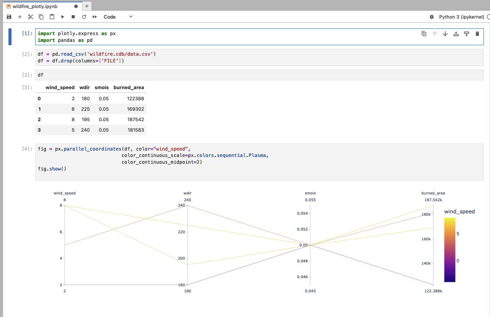
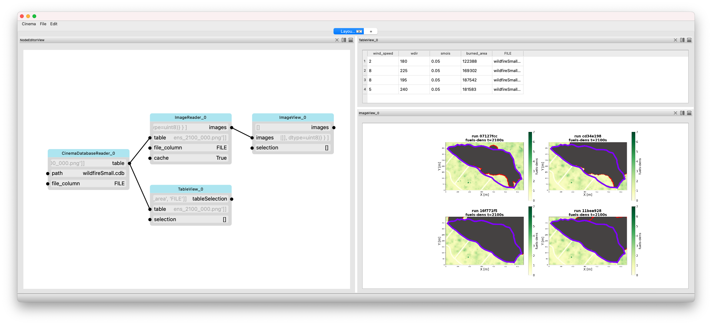
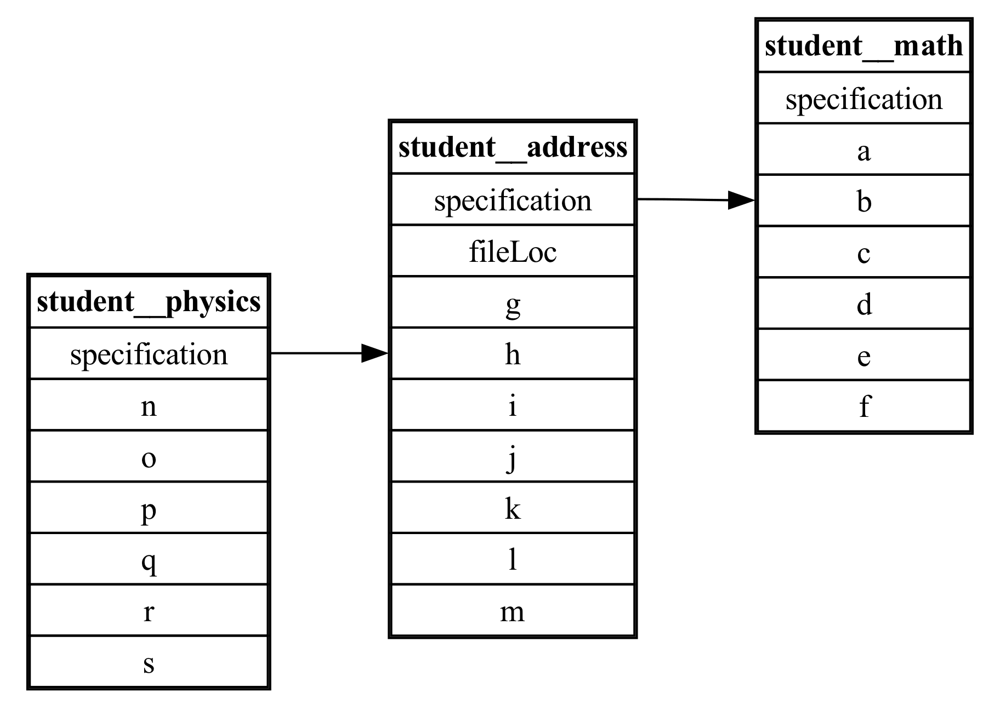
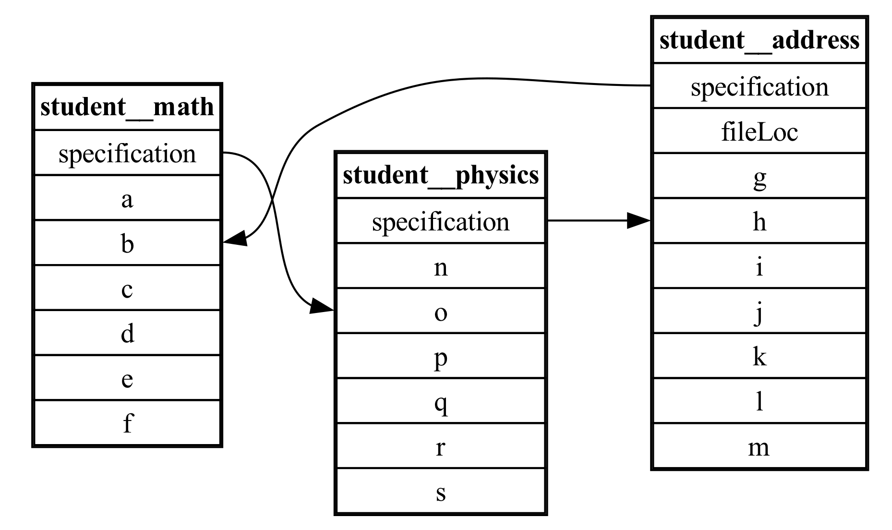
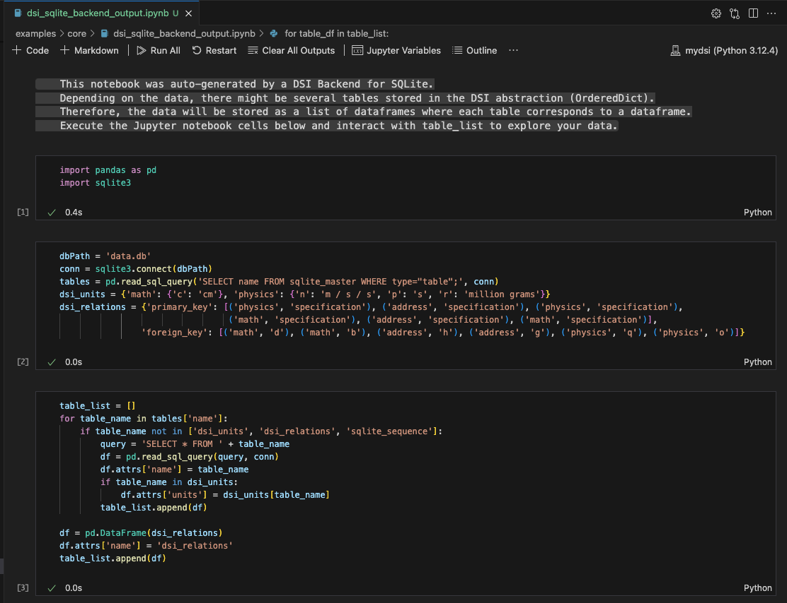
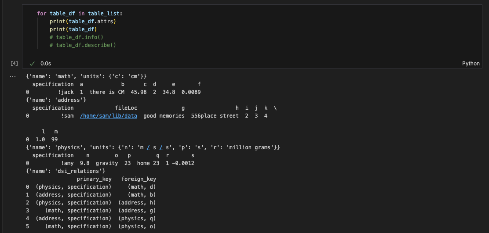

DSI Examples
PENNANT mini-app
PENNANT is an unstructured mesh physics mini-application developed at Los Alamos National Laboratory for advanced architecture research. It contains mesh data structures and a few physics algorithms from radiation hydrodynamics and serves as an example of typical memory access patterns for an HPC simulation code.
This DSI PENNANT example is used to show a common use case: create and query a set of metadata derived from an ensemble of simulation runs. The example GitHub directory includes 10 PENNANT runs using the PENNANT Leblanc test problem.
In the first step, a python script is used to parse the slurm output files and create a CSV (comma separated value) file with the output metadata.
./parse_slurm_output.py --testname leblanc
In the second step, another python script,
./create_and_query_dsi_db.py --testname leblanc
reads in the CSV file and creates a database:
#!/usr/bin/env python3
"""
This script reads in the csv file created from parse_slurm_output.py.
Then it creates a DSI db from the csv file and performs a query.
"""
import argparse
import sys
from dsi.backends.sqlite import Sqlite, DataType
import os
from dsi.core import Terminal
if __name__ == "__main__":
""" The testname argument is required """
parser = argparse.ArgumentParser()
parser.add_argument('--testname', help='the test name')
args = parser.parse_args()
test_name = args.testname
if test_name is None:
parser.print_help()
sys.exit(0)
table_name = "rundata"
csvpath = 'pennant_' + test_name + '.csv'
dbpath = 'pennant_' + test_name + '.db'
output_csv = "pennant_read_query.csv"
core = Terminal()
# This reader creates a manual simulation table where each row of pennant is its own simulation
core.load_module('plugin', "Wildfire", "reader", filenames = csvpath, table_name = table_name, sim_table = True)
if os.path.exists(dbpath):
os.remove(dbpath)
#load data into sqlite db
core.load_module('backend','Sqlite','back-write', filename=dbpath)
core.artifact_handler(interaction_type='ingest')
# update dsi abstraction using a query to the sqlite db
query_data = core.artifact_handler(interaction_type='query', query = f"SELECT * FROM {table_name} WHERE hydro_cycle_run_time > 0.006;", dict_return = True)
core.update_abstraction(table_name, query_data)
#export to csv
core.load_module('plugin', "Csv_Writer", "writer", filename = output_csv, table_name = table_name)
core.transload()
Resulting in the output of the query:

The output of the PENNANT example.
Wildfire Dataset
This example highlights the use of the DSI framework with QUIC-Fire simulation data and resulting images. QUIC-Fire is a fire-atmosphere modeling framework for prescribed fire burn analysis. It is light-weight (able to run on a laptop), allowing scientists to generate ensembles of thousands of simulations in weeks. This QUIC-fire dataset is an ensemble of prescribed fire burns for the Wawona region of Yosemite National Park.
The original file, wildfire.csv, lists 1889 runs of a wildfire simulation. Each row is a unique run with input and output values and associated image url. The columns list the various parameters of interest. The input columns are: wild_speed, wdir (wind direction), smois (surface moisture), fuels, ignition, safe_unsafe_ignition_pattern, safe_unsafe_fire_behavior, does_fire_meet_objectives, and rationale_if_unsafe. The output of the simulation (and post-processing steps) include the burned_area and the url to the wildfire images stored on the San Diego Super Computer.
All paths in this example are defined from the main dsi repository folder, assumed to be ~/<path-to-dsi-directory>/dsi.
To run this example, load dsi and run:
python3 examples/wildfire/wildfire.py
import os
import pandas as pd
import urllib.request
from dsi.backends.sqlite import Sqlite, DataType
import shutil
from dsi.core import Terminal
isVerbose = True
"""
Read and download the images from the SDSC server
"""
def downloadImages(path_to_csv, imageFolder):
df = pd.read_csv (path_to_csv)
for index, row in df.iterrows():
url = row['FILE']
filename = url.rsplit('/', 1)[1]
isExist = os.path.exists(imageFolder)
if not isExist:
os.makedirs(imageFolder)
dst = imageFolder + filename
urllib.request.urlretrieve(url, dst)
if __name__ == "__main__":
# predefined paths
dstFolder = ""
imageFolderName = "images/"
imgDstFolder = dstFolder + imageFolderName
path_to_csv_input = dstFolder + "wildfiredataSmall.csv"
path_to_sqlite_db = dstFolder + 'wildfire.db'
path_to_cinema_db = dstFolder + "wildfire.cdb/"
path_to_cinema_images = path_to_cinema_db + imageFolderName
path_to_cinema_csv = path_to_cinema_db + "data.csv"
dbName = "wfdata"
columns_to_keep = ["wind_speed", "wdir", "smois", "burned_area", "FILE"]
#external work from DSI
downloadImages(path_to_csv_input, imgDstFolder)
# moves the images to the Cinema Database folder - external to DSI
if not os.path.exists(path_to_cinema_db):
os.makedirs(path_to_cinema_db)
if os.path.exists(path_to_cinema_images):
shutil.rmtree(path_to_cinema_images)
os.rename(imgDstFolder, path_to_cinema_images)
core = Terminal()
#creating manual simulation table where each row of wildfire is its own simulation
core.load_module('plugin', "Wildfire", "reader", filenames = path_to_csv_input, table_name = dbName, sim_table = True)
# update DSI abstraction directly
updatedFilePaths = []
wildfire_table = core.get_current_abstraction(table_name = dbName)
for url_image in wildfire_table['FILE']:
image_name = url_image.rsplit('/', 1)[1]
filePath = imageFolderName + image_name
updatedFilePaths.append(filePath)
wildfire_table['FILE'] = updatedFilePaths
core.update_abstraction(dbName, wildfire_table)
# export data with revised filepaths to CSV
core.load_module('plugin', "Csv_Writer", "writer", filename = path_to_cinema_csv, table_name = dbName, export_cols = columns_to_keep)
core.transload()
if os.path.exists(path_to_sqlite_db):
os.remove(path_to_sqlite_db)
#load data to a sqlite database
core.load_module('backend','Sqlite','back-write', filename=path_to_sqlite_db)
core.artifact_handler(interaction_type='ingest')
This will generate a wildfire.cdb folder with downloaded images from the server and a data.csv file of numerical properties of interest. This cdb folder is called a Cinema database (CDB). Cinema is an ecosystem for management and analysis of high dimensional data artifacts that promotes flexible and interactive data exploration and analysis. A Cinema database is comprised of a CSV file where each row of the table is a data element (ex: run or ensemble member of a simulation) and each column is a property of the data element. Any column name that starts with ‘FILE’ is a path to a file associated with the data element. This could be an image, a plot, a simulation mesh or other data artifact.
Cinema databases can be visualized through various tools. We illustrate two options below:
To visualize the results using Jupyter Lab and Plotly, run:
python3 -m pip install plotly
python3 -m pip install jupyterlab
Open Jupyter Lab with:
jupyter lab --browser Firefox
and navigate to wildfire_plotly.ipynb. Run the cells to visualize the results of the DSI pipeline.
{kind=link}

Screenshot of the JupyterLab workflow. The CSV file is loaded and used to generate a parallel coordinates plot showing the parameters of interest from the simulation.
Another option is to use Pycinema, a QT-based GUI that supports visualization and analysis of Cinema databases. To open a pycinema viewer, first install pycinema and then run the example script.
python3 -m pip install pycinema
cinema examples/wildfire/wildfire_pycinema.py
{kind=link}

Screenshot of the Pycinema user interface showing the minimal set of components. Left: the nodeview showing the various pycinema components in the visualization pipeline; upper-right: the table-view; lower-right: the image view. Pycinema components are linked such that making a selection in one view will propagate to the other views.
Complex Schemas in DSI
This example details how to structure a JSON file for the DSI Schema Reader to store all table primary key - foreign key relations.
If we consider a workflow where we read in a complex schema for YAML data and generate an ER Diagram:
# examples/core/schema.py
from dsi.core import Terminal
terminal = Terminal(debug = 0, backup_db = False, runTable = True)
# using schema to target a collection of tables which all have a prefix 'student'
terminal.load_module('plugin', 'Schema', 'reader', filename="../data/example_schema.json", target_table_prefix = "student")
#creates tables from this YAML data which all have a prefix of 'student'
terminal.load_module('plugin', 'YAML1', 'reader', filenames=["../data/student_test1.yml", "../data/student_test2.yml"], target_table_prefix = "student")
terminal.load_module('backend','Sqlite','back-write', filename='data.db')
terminal.artifact_handler(interaction_type='ingest')
terminal.load_module('plugin', 'ER_Diagram', 'writer', filename = 'er_diagram.png')
terminal.transload()
where examples/data/example_schema.json is:
{
"math": {
"primary_key": "specification",
"foreign_key": {
"b": ["address", "specification"]
},
"comment": "The value of 'primary_key' is this table's column that is a primary key (PK). There can only be ONE PK per table"
},
"address": {
"primary_key": "specification",
"foreign_key": {
"h": ["physics", "specification"]
},
"comment1": "The value of 'foreign_key' is a dictionary. There can be multiple foreign keys (FK) for a table.",
"comment2": "For each entry, the key is this table's column that is a FK and the value is a list of the associated table and column that form the PK",
"comment3": "Ex: 'address' table has a FK at the column 'h'. The associated PK is in the table 'physics' at column 'specification' "
},
"physics": {
"primary_key": "specification"
}
}
the ER diagram looks like:
{kind=link}

Entity Relationship Diagram of YAML data. Shows table relations between the student__math, student__address and student__physics tables, as well as the dsi_units table separately.
NOTE: The schema JSON files do not need “comment” keys. They have only been included to better explain the connection of the tables and columns.
For futher clarity, each schema file must be structured as a dictionary where:
each table with a relation is a key whose value is a nested dictionary storing primary and foreign key information
The nested dictionary has 2 keys: ‘primary_key’ and ‘foreign_key’ which must be spelled exactly the same to be processed:
The value of ‘primary_key’ is the string name of the column in this table that is a primary key
Ex: “primary_key” : “id”
The value of ‘foreign_key’ is another inner dictionary, since a table can have multiple foreign keys:
Each inner dictionary’s key is a column in this table that is a foreign key to another table’s primary key
The key’s value is a list of 2 elements - the other table storing the primary key, and the column in that table that is the primary key
Ex: “foreign_key” : { “name” : [“table1”, “id”] , “age” : [“table2”, “id”] }
If a table does not have a primary key there is no need to include an empty key/value pair for the table
If a table does not have foreign keys, there is no need for an empty inner dictionary
For example, if we have a a table ‘Payments’ which has a primary key ‘id’ and a foreign key ‘user_name’ which points to another table ‘Users’ whose primary key column is ‘name’, the schema is:
{
"Payments": {
"primary_key" : "id",
"foreign_key" : {
"user_name" : ["Users", "name"]
}
}
}
Based on this, if we edit examples/data/example_schema.json by adding a foreign key in ‘physics’ pointing to ‘specification’ in ‘math’:
{
"math": {
"primary_key": "specification",
"foreign_key": {
"b": ["address", "specification"]
}
},
"address": {
"primary_key": "specification",
"foreign_key": {
"h": ["physics", "specification"]
}
},
"physics": {
"primary_key": "specification",
"foreign_key": {
"o": ["math", "specification"]
}
}
}
our new ER diagram is:
{kind=link}

ER Diagram of same YAML data. However, there is now an additional foreign key from student__physics to student__math’s primary key
Jupyter Notebook
This example displays an example workflow for a user to read data into DSI, ingest it into a backend and then view the data interactively with a Jupyter notebook.
examples/core/jupyter_example.py:
# examples/core/jupyter_example.py
from dsi.core import Terminal
term = Terminal(debug = 0, backup_db = False, runTable = False) #do not need a runTable here
#read data
term.load_module('plugin', 'Schema', 'reader', filename="../data/example_schema.json")
term.load_module('plugin', 'YAML1', 'reader', filenames=["../data/student_test1.yml"])
#ingest data to Sqlite backend
term.load_module('backend','Sqlite','back-write', filename='data.db')
term.artifact_handler(interaction_type='ingest')
#generate Jupyter notebook
term.artifact_handler(interaction_type="notebook")
The above workflow generates dsi_sqlite_backend_output.ipynb which can be seen below.
Users can make further edits to the Jupyter notebook to interact with the data.
{kind=link}

{kind=link}

Screenshots of an example Jupyter notebook with loaded data.